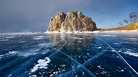

Northern Lake Baikal, Russia
| Another amazing lake, this one is located in southern Siberia and is the world’s largest freshwater bit of blue. The water round these parts freezes into sheets of turquoise ice in winter that might look more at home in Superman’s Fortress of Solitude. Temperatures can plummet to -19°C from December to February, so don’t forget to pack the onesie. |  |